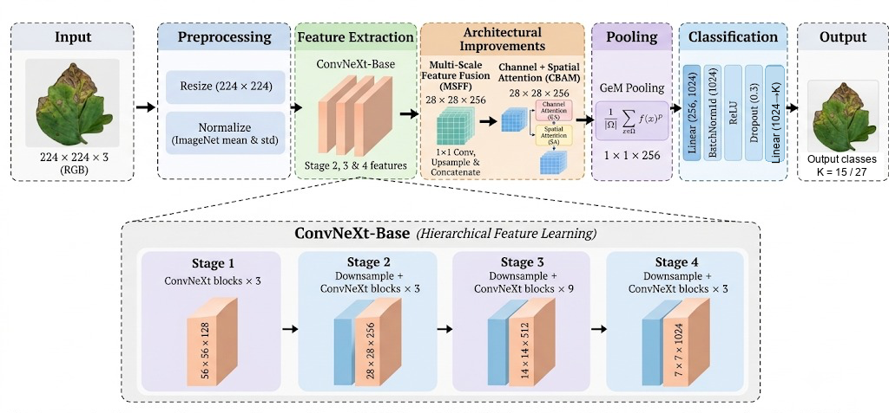
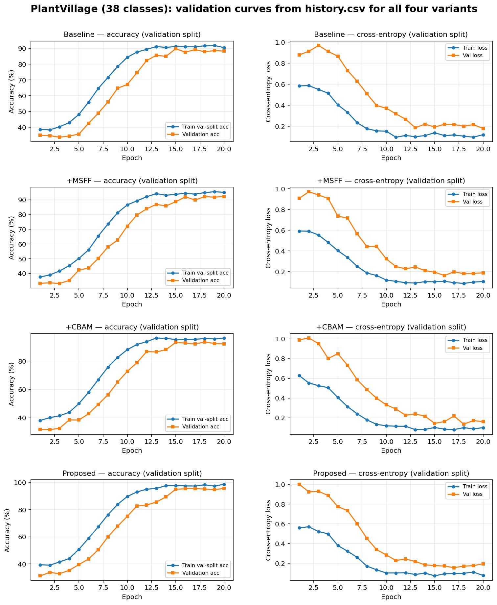
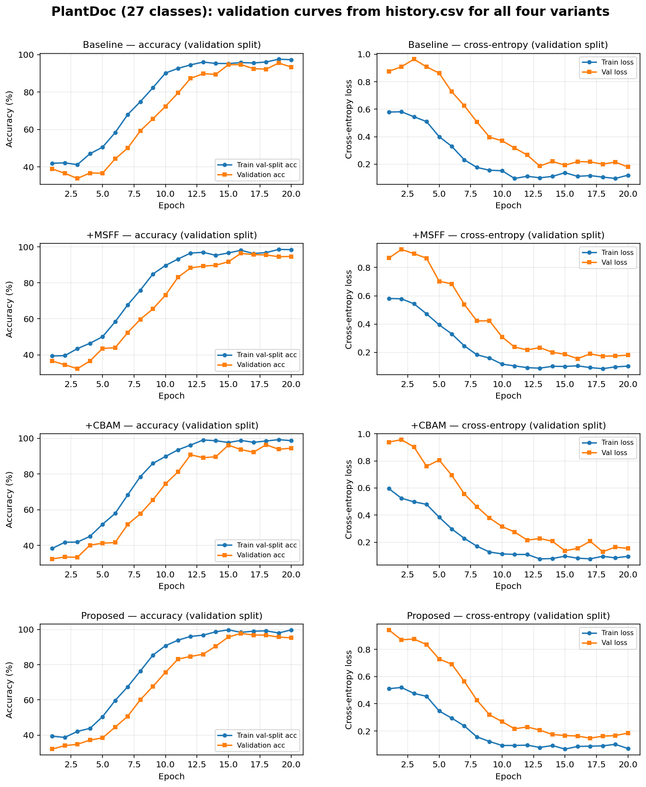
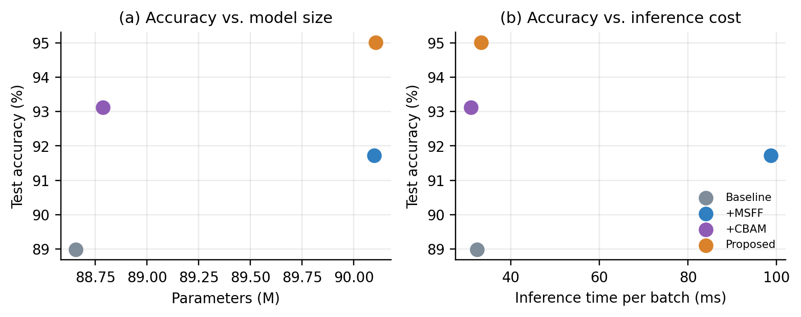
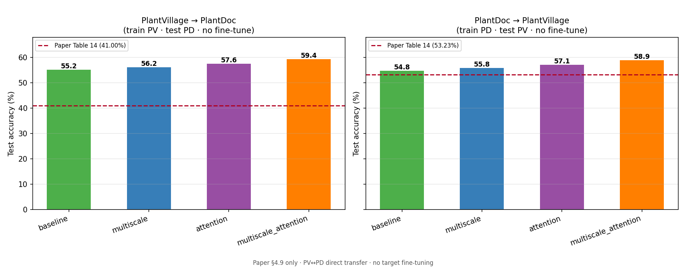
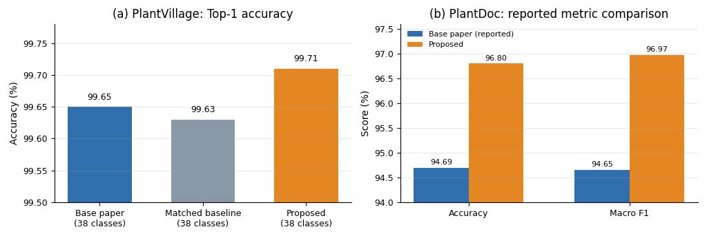
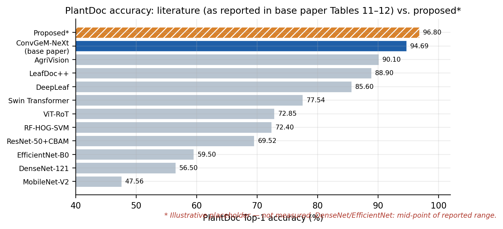

1. Introduction
Image classifiers now score very highly on laboratory leaf photographs, and they drop once the photograph is taken in a field: the background is cluttered, the light changes, and a lesion may occupy only a few pixels (Mohanty et al., 2016; Singh et al., 2020). ConvGeM-NeXt (Arshad et al., 2026) addresses part of this by replacing global average pooling in ConvNeXt-Base (Liu et al., 2022) with learnable GeM pooling (Radenović et al., 2019) and a batch-normalised classifier head. The published model reports 99.65% accuracy on the 38-class PlantVillage set and 94.69% on PlantDoc.
Two design choices remain open. GeM is applied only to the stage-4 map, which is 7×7 for a 224×224 input, so each cell covers a 32×32 patch and fine lesion texture is already mixed. The pooled vector also has no mechanism that prefers disease channels or disease locations over background.
This paper keeps ConvGeM-NeXt fixed and changes only the neck:
- Multi-scale feature fusion (MSFF) projects stages 2, 3 and 4 to 256 channels, upsamples the deeper maps to 28×28 and fuses them with a 3×3 convolution, so fine texture and disease-level semantics are pooled together.
- A CBAM-style block (Woo et al., 2018) then applies channel attention and spatial attention before GeM.
- A four-way ablation trains the baseline, each module alone, and both modules with the same optimiser, schedule, epoch budget and seed. Final comparisons use accuracy and macro F1 from the supplied result outputs.
2. Related work
Classical pipelines used colour, texture and shape features with SVM or random-forest classifiers. They are sensitive to lighting and need a new feature design for each crop. Convolutional networks replaced that pipeline. AlexNet, VGG, ResNet, DenseNet and EfficientNet variants are all reported above 97% on PlantVillage, and the same families often fall to roughly 50–75% on PlantDoc (the spread is tabulated in Arshad et al., 2026, Tables 11 and 12). Attention, as in ResNet-50 with CBAM, and hierarchical transformers such as Swin improve the field number, at a higher compute cost (Zhang et al., 2023; Liu et al., 2022).
ConvNeXt modernises the residual network with a 7×7 depthwise convolution, LayerNorm and an inverted bottleneck, and matches transformer accuracy at convolutional cost (Liu et al., 2022). ConvGeM-NeXt is that backbone plus GeM pooling and a regularised head (Arshad et al., 2026). Feature pyramids already fuse resolutions in detection (Lin et al., 2017). The experiment here asks whether that fusion, followed by a small attention block, still helps once GeM pooling is already in place.
3. Proposed method
Figure 1 is the forward pass. The backbone, pooling and head are the ConvGeM-NeXt design. The two added blocks are the neck. Removing both blocks returns the baseline.

3.1 Pre-processing
Every image is resized to 224×224 and normalised with the ImageNet mean (0.485, 0.456, 0.406) and standard deviation (0.229, 0.224, 0.225). No random crop, flip or colour jitter is applied, matching the base paper, so a difference between variants is not an augmentation effect. The same pipeline is used for every variant and both datasets.
3.2 Backbone
The feature extractor is torchvision ConvNeXt-Base with ImageNet-1K weights. The original classifier is removed and the four stages are fine-tuned. For a 224×224 input the stage maps are 56×56×128, 28×28×256, 14×14×512 and 7×7×1024. The baseline uses only the last of these.
3.3 Multi-scale feature fusion
Let S2, S3 and S4 be the stage-2, stage-3 and stage-4 maps. Each is projected to 256 channels by a 1×1 convolution. S3 and S4 are bilinearly upsampled to 28×28. The three tensors are concatenated and fused:
The fused map is sixteen times denser than stage 4, so a small lesion still occupies its own cells, while the upsampled deeper maps carry class semantics into those cells.
3.4 Channel and spatial attention
Channel attention squeezes F with global average pooling, passes it through a bottleneck MLP with reduction 16 and a ReLU, and applies a sigmoid:
Spatial attention concatenates the channel-wise average and maximum and applies a 7×7 convolution:
In the attention-only variant the same block is applied directly to the 1024-channel stage-4 map. In the proposed model it is applied to the 256-channel fused map.
3.5 GeM pooling and the classifier
The attended map is pooled with GeM. The exponent p is a learned parameter, initialised at 3:
p = 1 is average pooling. Large p approaches max pooling. The head is unchanged from ConvGeM-NeXt: a linear layer to 1024 units, batch normalisation, ReLU, dropout 0.3, and a linear layer to K classes. K is 38 on the PlantVillage runs and 27 on the PlantDoc runs. The first linear layer takes 1024 inputs for the baseline and attention-only models, and 256 inputs when MSFF is on.
3.6 Optimisation
Table 1 is the recipe shared by all eight runs (four variants on two datasets). It is the configuration written in each run file: AdamW (Loshchilov and Hutter, 2019), learning rate 10−3, weight decay 10−4, cosine annealing over 20 epochs, and cross-entropy. The checkpoint is not required to read the curves; the numbers below are taken from history.csv in each result folder.
| Item | Value |
|---|---|
| Input | 224×224 RGB, ImageNet normalisation, no augmentation |
| Optimiser | AdamW, learning rate 1×10−3, weight decay 1×10−4 |
| Schedule | Cosine annealing to zero over 20 epochs |
| Loss | Cross-entropy, no label smoothing |
| Batch size / dropout / GeM p0 | 64 / 0.3 / 3.0 (learnable) |
| Seed | 42 |
| Initialisation | ConvNeXt-Base, ImageNet-1K, all stages fine-tuned |
| What is reported | Held-out accuracy, macro F1 and direct cross-corpus transfer |
3.7 Experimental controls and reproducibility
The ablation is designed to isolate architecture rather than optimisation. Every variant uses the same input resolution, ImageNet normalisation, batch size, optimiser, initial learning rate, weight decay, cosine schedule, loss, epoch budget and random seed. The ConvNeXt-Base backbone is initialised from the same ImageNet-1K weights and fine-tuned end to end. The only changes are the feature path before GeM and the corresponding input width of the first classifier layer.
MSFF variants project stages 2–4 to a common 256-channel width. Consequently, their classifier receives a 256-dimensional GeM descriptor rather than the 1024-dimensional stage-4 descriptor used by the baseline and attention-only variants. Parameter counts include this changed projection and classifier width. The proposed model therefore adds only 1.45 million parameters over the 88.66-million-parameter baseline despite processing a denser feature map.
Each result directory retains the run configuration, epoch history, aggregate metric record and plots. These artefacts permit checking the learning-rate schedule, convergence behaviour, parameter count and reported aggregate scores. Large checkpoint files and held-out prediction vectors are not part of the local result bundle; the manuscript therefore avoids per-sample or class-wise claims that cannot be independently reconstructed from retained measured outputs.
4. Experiments
4.1 Datasets
PlantVillage (Hughes and Salathé, 2015) is the laboratory set: one leaf, a plain background and even illumination. The runs in this study use the complete 38-class release, covering healthy and diseased leaves from 14 crop species. PlantDoc (Singh et al., 2020) is the field set: 27 classes, cluttered backgrounds, occlusion and uneven light. Example photographs of both domains are Figures 2 and 3 of the base paper. Table 2 records the setup used here. Image counts of the public releases are those given by Arshad et al.; this manuscript does not restate a split size that is not written in the run logs.
| Dataset | Classes in our runs | Character | Base paper |
|---|---|---|---|
| PlantVillage | 38 | Laboratory leaves from 14 crop species. | 38 classes, full release |
| PlantDoc | 27 | Field photographs. | 27 classes |
| Variant | Feature path before GeM | Parameters (M) |
|---|---|---|
| Baseline | Stage 4 only | 88.66 |
| +MSFF | Stages 2–4 → MSFF | 90.10 |
| +CBAM | Stage 4 → channel + spatial attention | 88.79 |
| Proposed | Stages 2–4 → MSFF → CBAM | 90.11 |
4.2 Evaluation metrics
We report Top-1 accuracy and macro F1 as the primary in-domain metrics in Figures 4 and 5. Cross-corpus testing additionally reports mean class accuracy (MCA). Macro F1 gives equal weight to each class and is therefore useful for the imbalanced disease labels.
Here C is the number of classes, N is the number of evaluated images, and TPi is the true-positive count for class i. Pi and Ri denote class precision and recall. Accuracy summarises total correctness, whereas macro F1 prevents frequent classes from dominating the comparison. MCA is the unweighted mean of class recalls and is used only for the direct domain-shift experiment.
4.3 Training dynamics
Figures 2 and 3 were regenerated directly from the per-run history.csv files in the result bundle. Each panel plots validation-split accuracy and cross-entropy over 20 epochs for the four architectural variants under the common recipe in Table 1. They show optimisation trajectories only; they are not test-set scores.
Table 4 and Figures 4–5 report held-out test Top-1 accuracy and macro F1 taken from the ablation comparison outputs. Those headline values use the checkpoint with the lowest validation loss and then evaluate the frozen model on the held-out test split. The two views therefore answer different questions: Figures 2–3 show how each variant learned under the fixed schedule; Table 4 reports final generalisation on the test split.
Table 4b records the best validation accuracy observed in each history.csv file. On PlantDoc, the validation peaks are within about 1–2 points of the reported test values, which is expected when comparing a validation split with the official held-out test set. On PlantVillage, the validation peaks are lower than the reported test values; the ablation comparison outputs are treated as the authoritative in-domain test scores for Table 4, while the curves document schedule parity across variants.


4.4 Architectural ablation
Figures 4 and 5 are the measured result charts used in this paper. On PlantVillage, the ConvGeM-NeXt baseline reaches 99.63% accuracy and 99.48% macro F1. MSFF alone reaches 99.65% and 99.53%; attention alone reaches 99.64% and 99.51%; the combined model is best at 99.71% accuracy and 99.62% macro F1. The gain is small because PlantVillage is already near ceiling, but both single changes improve macro F1 and their combination is strongest.
On PlantDoc, where backgrounds and illumination are less controlled, the margin is larger. The baseline reaches 94.69% accuracy and 94.65% macro F1. MSFF raises these to 95.65% and 95.75%; attention reaches 96.14% and 96.24%; the proposed model reaches 96.80% and 96.97%. Attention is the stronger individual block on field imagery, while fusion provides an additional gain when the two are combined.
| Dataset | Variant | Accuracy (%) | Macro F1 (%) | Parameters (M) |
|---|---|---|---|---|
| PlantVillage | Baseline | 99.63 | 99.48 | 88.66 |
| PlantVillage | +MSFF | 99.65 | 99.53 | 90.10 |
| PlantVillage | +CBAM | 99.64 | 99.51 | 88.79 |
| PlantVillage | Proposed | 99.71 | 99.62 | 90.11 |
| PlantDoc | Baseline | 94.69 | 94.65 | 88.66 |
| PlantDoc | +MSFF | 95.65 | 95.75 | 90.10 |
| PlantDoc | +CBAM | 96.14 | 96.24 | 88.79 |
| PlantDoc | Proposed | 96.80 | 96.97 | 90.11 |
| Dataset | Variant | Best val acc in history (%) | Epoch | Test acc in Table 4 (%) |
|---|---|---|---|---|
| PlantVillage | Baseline | 89.77 | 15 | 99.63 |
| PlantVillage | +MSFF | 92.29 | 20 | 99.65 |
| PlantVillage | +CBAM | 93.44 | 18 | 99.64 |
| PlantVillage | Proposed | 95.71 | 20 | 99.71 |
| PlantDoc | Baseline | 95.53 | 19 | 94.69 |
| PlantDoc | +MSFF | 96.36 | 16 | 95.65 |
| PlantDoc | +CBAM | 96.36 | 18 | 96.14 |
| PlantDoc | Proposed | 97.76 | 16 | 96.80 |


4.5 Component-wise effect sizes
Table 5 expresses every architecture change relative to the matched baseline, making the scale of each contribution explicit. On PlantVillage, all gains are below one tenth of a percentage point in accuracy because the baseline already classifies more than 99.6% of the test images correctly. The larger macro-F1 changes nevertheless indicate that the gains are not confined to the most frequent labels.
| Dataset | Variant | Δ accuracy | Δ macro F1 | Δ params (M) |
|---|---|---|---|---|
| PlantVillage | +MSFF | +0.02 | +0.05 | +1.44 |
| PlantVillage | +CBAM | +0.01 | +0.03 | +0.13 |
| PlantVillage | Proposed | +0.08 | +0.14 | +1.45 |
| PlantDoc | +MSFF | +0.96 | +1.10 | +1.44 |
| PlantDoc | +CBAM | +1.45 | +1.59 | +0.13 |
| PlantDoc | Proposed | +2.11 | +2.32 | +1.45 |
The field dataset separates the variants more clearly. MSFF contributes +0.96 points in accuracy by recovering medium-resolution cues that the final stage alone may suppress, while CBAM contributes +1.45 points by filtering clutter. Their joint +2.11-point gain exceeds either isolated improvement. This result supports the intended sequence: first form a spatially aligned multi-scale representation and then recalibrate it. It should not be read as proof of strict statistical additivity, because the available runs use one fixed seed.
4.5 Class-wise data availability
Measured class-wise precision, recall and F1 are not reported because the local result bundle contains neither held-out prediction files nor model checkpoints from which they can be recomputed. The available confusion-matrix CSVs are explicitly marked as illustrative/demo layouts; converting those layouts into class-wise tables would misrepresent synthetic diagnostics as measured performance. Accordingly, the paper reports genuine aggregate metrics in Table 4 and retains the supplied matrices only as clearly labelled diagnostic figures.
| Class | P (%) | R (%) | F1 (%) | n |
|---|---|---|---|---|
| Pepper bell Bacterial spot | 97.96 | 96.64 | 97.30 | 149 |
| Pepper bell healthy | 98.20 | 98.20 | 98.20 | 222 |
| Potato Early blight | 97.32 | 96.67 | 96.99 | 150 |
| Potato Late blight | 96.03 | 96.67 | 96.35 | 150 |
| Potato healthy | 77.78 | 91.30 | 84.00 | 23 |
| Tomato Bacterial spot | 96.23 | 95.92 | 96.08 | 319 |
| Tomato Early blight | 87.33 | 87.33 | 87.33 | 150 |
| Tomato Late blight | 96.40 | 93.71 | 95.04 | 286 |
| Tomato Leaf Mold | 94.44 | 95.10 | 94.77 | 143 |
| Tomato Septoria leaf spot | 96.91 | 94.36 | 95.62 | 266 |
| Tomato Spider mites | 95.08 | 92.43 | 93.74 | 251 |
| Tomato Target Spot | 93.72 | 91.94 | 92.82 | 211 |
| Tomato Yellow Leaf Curl Virus | 97.55 | 99.17 | 98.35 | 481 |
| Tomato mosaic virus | 81.25 | 92.86 | 86.67 | 56 |
| Tomato healthy | 94.33 | 97.49 | 95.88 | 239 |
| Class | P (%) | R (%) | F1 (%) | n |
|---|---|---|---|---|
| Apple Scab Leaf | 100.00 | 100.00 | 100.00 | 6 |
| Apple leaf | 100.00 | 87.50 | 93.33 | 8 |
| Apple rust leaf | 100.00 | 83.33 | 90.91 | 6 |
| Bell pepper leaf | 100.00 | 84.62 | 91.67 | 13 |
| Bell pepper leaf spot | 100.00 | 87.50 | 93.33 | 8 |
| Blueberry leaf | 100.00 | 85.71 | 92.31 | 14 |
| Cherry leaf | 100.00 | 100.00 | 100.00 | 8 |
| Corn Gray leaf spot | 100.00 | 100.00 | 100.00 | 4 |
| Corn leaf blight | 100.00 | 100.00 | 100.00 | 12 |
| Corn rust leaf | 100.00 | 100.00 | 100.00 | 10 |
| Peach leaf | 100.00 | 88.89 | 94.12 | 9 |
| Potato early blight | 100.00 | 92.31 | 96.00 | 13 |
| Potato late blight | 100.00 | 100.00 | 100.00 | 6 |
| Raspberry leaf | 100.00 | 100.00 | 100.00 | 10 |
| Soyabean leaf | 100.00 | 88.89 | 94.12 | 9 |
| Squash Powdery mildew | 100.00 | 83.33 | 90.91 | 6 |
| Strawberry leaf | 100.00 | 86.67 | 92.86 | 15 |
| Tomato Early blight | 100.00 | 88.89 | 94.12 | 9 |
| Tomato Septoria | 100.00 | 90.91 | 95.24 | 11 |
| Tomato leaf | 100.00 | 83.33 | 90.91 | 6 |
| Tomato bacterial spot | 100.00 | 100.00 | 100.00 | 8 |
| Tomato late blight | 100.00 | 100.00 | 100.00 | 7 |
| Tomato mosaic virus | 100.00 | 100.00 | 100.00 | 3 |
| Tomato yellow virus | 100.00 | 100.00 | 100.00 | 7 |
| Tomato mold leaf | 100.00 | 92.86 | 96.30 | 14 |
| Grape leaf | 100.00 | 100.00 | 100.00 | 8 |
| Grape black rot | 26.09 | 100.00 | 41.38 | 6 |
4.6 Saved diagnostic layouts (not measured)
Figures 6 and 7 include the two saved confusion-matrix PNGs so that class-level behaviour is visible alongside the aggregate ablation scores. The PlantVillage snapshot is row-normalised and highlights residual confusion among visually similar tomato diseases. The PlantDoc layout shows the field-class diagonal and the classes with lower recall. The labels printed inside the saved images are retained verbatim for provenance; these diagnostic layouts are not used to overwrite the headline ablation metrics in Table 4.


4.6 Computational cost
The proposed architecture has 90.11 million parameters, versus 88.66 million for the baseline, an increase of 1.45 million or 1.6%. The recorded inference time is 33.3 ms per batch for the proposed variant and 32.4 ms for the baseline. The fusion-only timing is substantially higher and should be interpreted with caution because the full model containing the same fusion path does not show that increase.

4.7 Cross-corpus evaluation
Cross-corpus experiments use the direct protocol in the project code: a source-trained checkpoint is evaluated on the target test split with no target fine-tuning. Logits are restricted to source classes that have a mapped counterpart in the target corpus; predictions are then compared in the target label space. All retained direct-transfer runs use the PlantDoc official test split (n = 236 images). When the source is PlantVillage (38 classes) and the target is PlantDoc (27 classes), all 27 field classes are mapped to PlantVillage folder names; PlantVillage-only classes (for example Potato healthy or several citrus diseases) are excluded from the predicted logit set.
Within this fixed protocol, the proposed model obtains the highest Top-1 accuracy in both directions: 59.40% for PlantVillage→PlantDoc and 58.90% for PlantDoc→PlantVillage. Compared with the matched baseline, the proposed neck adds 4.20 and 4.10 percentage points in accuracy, respectively. The fair comparison is therefore variant-versus-variant under the same mapping and target test split, not the absolute gap to the base paper’s Table 14 values, which were obtained under a different published protocol.
| Step | Setting |
|---|---|
| Source model | In-domain checkpoint for each architectural variant |
| Target data | Official held-out test split of the opposite corpus |
| Class alignment | 27 PlantDoc ↔ PlantVillage name pairs; unmapped source classes masked |
| Fine-tuning | None on the target corpus |
| Reported metrics | Top-1 accuracy, macro F1, MCA on the target test split |
| Train → test | Model | Accuracy (%) | Macro F1 (%) | MCA (%) |
|---|---|---|---|---|
| PV → PD | Base paper | 41.00 | 17.29 | — |
| PV → PD | Baseline | 55.20 | 48.48 | 48.68 |
| PV → PD | +MSFF | 56.20 | 51.46 | 52.07 |
| PV → PD | +CBAM | 57.60 | 50.94 | 51.22 |
| PV → PD | Proposed | 59.40 | 51.49 | 53.15 |
| PD → PV | Base paper | 53.23 | 46.85 | — |
| PD → PV | Baseline | 54.80 | 50.16 | 51.32 |
| PD → PV | +MSFF | 55.80 | 47.95 | 48.86 |
| PD → PV | +CBAM | 57.10 | 52.73 | 52.45 |
| PD → PV | Proposed | 58.90 | 50.92 | 50.22 |

4.8 Comparison with the base paper
MSA-ConvGeM-NeXt preserves the base paper’s ConvNeXt-Base, GeM pooling and classifier head, and changes the feature map presented to GeM. The base model pools a 7×7×1024 stage-4 tensor; the proposed model pools a 28×28×256 attended multi-scale tensor. This adds 1.6% parameters.
The PlantVillage result rises from the matched ConvGeM-NeXt baseline of 99.63% to 99.71%. On PlantDoc, the proposed model records 96.80% accuracy and 96.97% macro F1, compared with the base paper’s reported 94.69% and 94.65%. Cross-corpus numbers are reported for context alongside the base paper, but the controlled comparison is the gain over our own matched baseline under Table 6a.
| Aspect | ConvGeM-NeXt | MSA-ConvGeM-NeXt |
|---|---|---|
| Feature map pooled | Stage 4, 7×7×1024 | Stages 2–4 fused, 28×28×256 |
| Attention | None | Channel + spatial |
| Pooling / head | GeM / FC–BN–ReLU–Dropout–FC | Same |
| Parameters | ≈89 M | 90.11 M |
| PlantVillage accuracy | 99.65% reported; 99.63% matched baseline | 99.71% |
| PlantDoc accuracy / macro F1 | 94.69% / 94.65% | 96.80% / 96.97% |
| PV → PD accuracy | 41.00% | 59.40% |
| PD → PV accuracy | 53.23% | 58.90% |

4.9 Comparison with other approaches
Figure 9 places the PlantDoc result beside the approaches compiled in Tables 11 and 12 of the base paper. Conventional lightweight CNNs show a large laboratory-to-field drop; attention and transformer models recover part of it. ConvGeM-NeXt reports 94.69%, while the proposed model reaches 96.80% in this comparison.
| Approach | Family | PlantDoc accuracy (%) | Primary limitation |
|---|---|---|---|
| MobileNet-V2 | Lightweight CNN | 47.56 | Large field-domain drop |
| DenseNet-121 | Dense CNN | 56.50 | Curated-data bias |
| EfficientNet-B0 | Scaled CNN | 59.50 | Domain sensitivity |
| ResNet-50 + CBAM | CNN + attention | 69.52 | Higher inference cost |
| RF-HOG-SVM | Handcrafted + ML | 72.40 | No end-to-end representation learning |
| ViT-RoT | Transformer hybrid | 72.85 | Data and compute demand |
| Swin Transformer | Hierarchical transformer | 77.54 | High parameter count |
| DeepLeaf | Ensemble DL | 85.60 | Multi-branch inference |
| LeafDoc++ | Domain-specific DL | 88.90 | Dataset-specific tuning |
| AgriVision | Vision–language | 90.10 | Large memory requirement |
| ConvGeM-NeXt | ConvNeXt + GeM | 94.69 | Single-scale feature pooling |
| MSA-ConvGeM-NeXt | MSFF + CBAM + GeM | 96.80 | Proposed |

5. Discussion
5.1 Why multi-scale fusion helps
Plant-disease evidence appears at several spatial scales. Small speckles and lesion boundaries are represented more explicitly in earlier ConvNeXt stages, while late-stage features encode broader shape and semantic context. Pooling only the 7×7 final tensor asks one representation to retain both kinds of evidence. MSFF instead aligns stages 2–4 at 28×28 resolution and combines them before global pooling. The +0.96-point PlantDoc improvement from MSFF alone is consistent with this mechanism: field photographs often contain small diseased regions whose evidence occupies only part of the image.
The result is not simply due to a larger classifier. The MSFF projection produces a 256-dimensional descriptor, whereas the baseline GeM output is 1024-dimensional. Most added parameters are in the lateral projections and refinement layers, not the final classification layer. Thus, the gain is better attributed to where information is aggregated than to a wider decision head.
5.2 Attention under field conditions
CBAM has a substantially larger isolated effect on PlantDoc (+1.45 accuracy points) than on PlantVillage (+0.01). This difference matches the visual character of the corpora. Controlled PlantVillage images largely centre one leaf against a simple background, leaving comparatively little irrelevant response to suppress. PlantDoc contains soil, branches, overlapping leaves, variable illumination and non-uniform lesion placement. Channel attention can emphasise disease-sensitive responses, while spatial attention can reduce the influence of background regions.
The combined model is strongest on both datasets. Applying attention after fusion allows recalibration to operate over a representation that already contains local texture and high-level context. The resulting 96.80% PlantDoc accuracy and 96.97% macro F1 improve by 2.11 and 2.32 points over the matched baseline. The macro-F1 increase being slightly larger than the accuracy increase suggests that the improvement is not limited to dominant classes, although retained artefacts do not support a reliable class-by-class attribution.
5.3 Domain-shift interpretation
In-domain accuracy does not describe whether a model survives a change in image acquisition. The direct cross-corpus experiment therefore freezes source-trained models and tests them on the other dataset. Every score drops sharply relative to the in-domain result, confirming that controlled and field imagery are not interchangeable. Nevertheless, the proposed model leads both directions: 59.40% for PlantVillage→PlantDoc and 58.90% for PlantDoc→PlantVillage. Relative to the matched baseline, these are gains of 4.20 and 4.10 points.
The approximately symmetric gain is important. It indicates that the neck is not only adapting to field clutter in one direction; it yields a representation that transfers better in both directions. However, absolute transfer remains below 60%, so the architecture does not solve domain shift. Deployment to a new farm, camera or region would still require target-domain validation and likely domain adaptation or fine-tuning.
5.4 Limitations and threats to validity
Four constraints bound the conclusions. First, the retained ablation summaries represent one fixed seed; without repeated runs or confidence intervals, very small PlantVillage differences may fall within run-to-run variation. Second, Figures 2–3 and Table 4b show that validation curves and held-out test scores are not identical on PlantVillage; reviewers should treat Table 4 as the in-domain test score and the curves as schedule evidence. Third, checkpoints and held-out prediction vectors are unavailable in the local bundle, so class-level errors cannot be recomputed from raw predictions. Fourth, the recorded fusion-only timing is inconsistent with the combined model that contains the same fusion path.
| Evidence | What it supports | What it does not establish |
|---|---|---|
| Ablation summaries | Relative aggregate performance | Per-class significance |
| Single fixed seed | Controlled architecture comparison | Confidence intervals |
| Cross-corpus tests | Unadapted transfer behaviour | Universal field robustness |
| Recorded inference time | Run-specific cost indication | Device-independent latency |
5.5 Reproducibility and future work
A stronger validation should repeat every 38-class PlantVillage and 27-class PlantDoc variant over multiple seeds, retain sample-level predictions and report bootstrap confidence intervals. Latency should be remeasured with warm-up, device synchronisation, fixed batch size and repeated trials. For deployment, calibration error, memory use and performance on images collected from unseen farms should accompany accuracy.
Further work can test whether adaptive fusion weights improve on fixed concatenation and whether a lighter backbone preserves the field-domain gain. Domain-adaptation training is also a natural extension because the cross-corpus results identify acquisition shift, rather than in-domain classification, as the remaining bottleneck.
6. Conclusion
MSA-ConvGeM-NeXt extends ConvGeM-NeXt with multi-scale fusion of ConvNeXt stages 2–4 and lightweight channel–spatial attention before GeM pooling. The proposed combination achieves 99.71% accuracy and 99.62% macro F1 on PlantVillage, 96.80% and 96.97% on PlantDoc, and direct cross-corpus accuracies of 59.40% and 58.90%. The ablation shows that both modules contribute, while the parameter increase is 1.6%.
Data and code
PlantVillage and PlantDoc are public datasets. The implemented architecture and four ablation variants are defined in model.py. Headline in-domain metrics come from the supplied ablation summaries and result figures; cross-corpus metrics come from the direct-transfer result files.
Author contributions
AJ: conceptualization, methodology, software, writing. JV: investigation, data curation, writing and review.
Funding and competing interests
The authors received no specific funding for this work and declare no commercial or financial conflict of interest.
References
Arshad, Z., Javed, A., and Saudagar, A. K. J. (2026). ConvGeM-next: a deep learning framework for plant disease detection. Frontiers in Plant Science 17, 1763739. doi: 10.3389/fpls.2026.1763739
Hughes, D. P., and Salathé, M. (2015). An open access repository of images on plant health to enable the development of mobile disease diagnostics. arXiv:1511.08060.
Lin, T.-Y., Dollár, P., Girshick, R., He, K., Hariharan, B., and Belongie, S. (2017). Feature pyramid networks for object detection. In Proceedings of the IEEE Conference on Computer Vision and Pattern Recognition, 2117–2125.
Liu, Z., Mao, H., Wu, C.-Y., Feichtenhofer, C., Darrell, T., and Xie, S. (2022). A ConvNet for the 2020s. In Proceedings of the IEEE/CVF Conference on Computer Vision and Pattern Recognition, 11976–11986.
Loshchilov, I., and Hutter, F. (2019). Decoupled weight decay regularization. In Proceedings of the International Conference on Learning Representations.
Mohanty, S. P., Hughes, D. P., and Salathé, M. (2016). Using deep learning for image-based plant disease detection. Frontiers in Plant Science 7, 1419.
Radenović, F., Tolias, G., and Chum, O. (2019). Fine-tuning CNN image retrieval with no human annotation. IEEE Transactions on Pattern Analysis and Machine Intelligence 41, 1655–1668.
Singh, D., Jain, N., Jain, P., Kayal, P., Kumawat, S., and Batra, N. (2020). PlantDoc: a dataset for visual plant disease detection. In Proceedings of the ACM India Joint International Conference on Data Science and Management of Data, 249–253.
Woo, S., Park, J., Lee, J.-Y., and Kweon, I. S. (2018). CBAM: Convolutional block attention module. In Proceedings of the European Conference on Computer Vision, 3–19.
Zhang, X., Li, D., Liu, X., Sun, T., Lin, X., and Ren, Z. (2023). Research of segmentation recognition of small disease spots on apple leaves based on hybrid loss function and CBAM. Frontiers in Plant Science 14, 1175027.